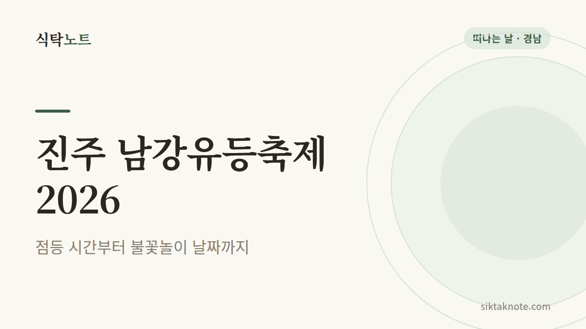
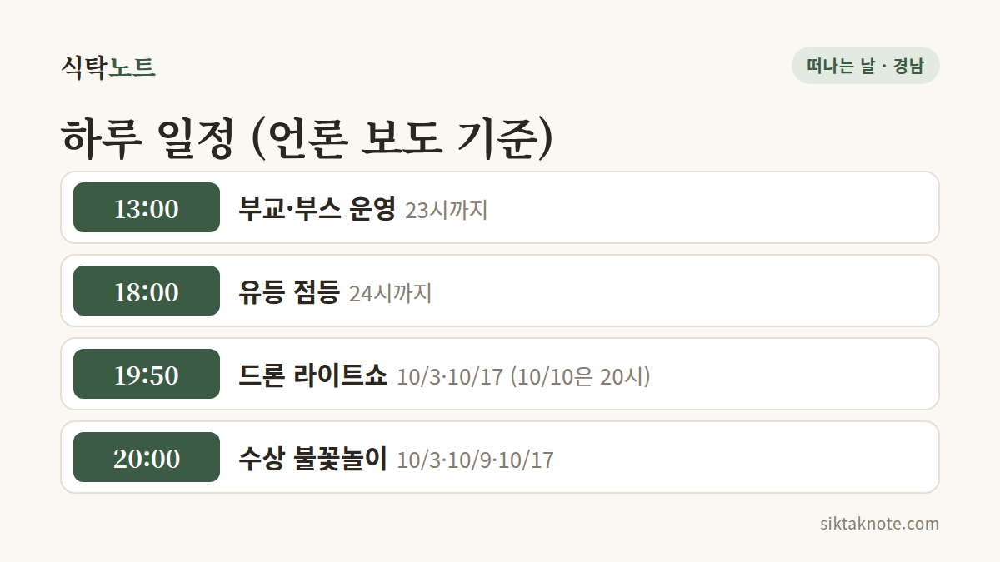

진주 남강유등축제 2026 가이드 — 점등 시간, 불꽃놀이 날짜, 셔틀버스

3줄 요약
- 2026년 10월 3일(토)부터 18일(일)까지 16일 동안 진주성과 남강 일원에서 열려요.
- 유등 점등은 매일 18시부터 24시까지이고, 수상 불꽃놀이는 10월 3일·9일·17일 20시예요.
- 입장은 무료이고, 부교를 건너려면 편도 2,000원, 종일권 6,000원이라는 보도가 있어요.
행사 정보
- 기간
- 2026년 10월 3일(토) ~ 18일(일), 16일간
- 장소
- 진주성과 남강 일원 (경남 진주시 남강로 626)
- 입장
- 무료 (한국관광공사 안내). 부교 이용은 편도 2,000원, 종일권 6,000원 (언론 보도)
- 같은 시기
- 개천예술제 10월 9일 ~ 18일
2026.10.03 확인 기준. 일정과 요금은 바뀔 수 있으니 방문 전에 공식 안내를 한 번 더 확인하세요.

어떤 축제인가요
진주 남강유등축제는 진주성과 남강에 수많은 유등을 띄우고 불을 밝히는 야간 축제예요. 올해는 10월 3일 토요일에 시작해서 18일 일요일까지 이어져요. 한국관광공사 안내에 소개된 프로그램은 수상과 육상 유등 전시, 드론 라이트쇼, 수상 불꽃놀이, 소원등 달기, 유등 띄우기, 부교 건너기, 크루즈예요.
날짜별로 챙길 것
개막 직전 보도를 기준으로 정리했어요. 날씨에 따라 바뀔 수 있다는 안내가 있었어요.
| 날짜 | 수상 불꽃놀이 | 드론 라이트쇼 |
|---|---|---|
| 10/3(토) | 20:00 | 19:50 |
| 10/9(금) | 20:00 | — |
| 10/10(토) | — | 20:00 |
| 10/17(토) | 20:00 | 19:50 |
표에서 "—"인 칸과 표에 없는 날은 보도에서 일정을 확인하지 못했다는 뜻이에요. 없다는 뜻은 아니니 공식 안내를 확인하세요.
- 유등 점등은 매일 18시부터 24시까지예요.
- 부교와 부스는 13시부터 23시까지 운영한다고 해요.
- 무료 셔틀버스는 10월 3~5일, 9~11일, 16~18일에 16시부터 23시까지 운행한다는 보도가 있어요. 승차 위치는 공식 안내를 확인하세요.
요금
입장은 무료예요. 다만 남강 위 부교를 건너려면 편도 2,000원, 종일권 6,000원이라는 기사가 있었어요. 부교 요금은 공식 안내에서 한 번 더 확인하세요.
이렇게 다니면 편해요
유등의 아름다움은 해가 진 뒤에 살아나니, 저녁 시간에 맞춰 가는 게 좋아요. 아래는 제안이에요.
- 오후: 진주성을 먼저 걸어요. 진주성은 촉석루로 잘 알려져 있어요.
- 해 질 무렵: 점등이 시작되는 18시쯤 남강 가에 자리를 잡아요.
- 저녁: 불꽃놀이나 드론 라이트쇼가 있는 날에는 시작 30분 전에 자리를 잡는 게 좋아요.
- 식사: 진주는 비빔밥과 냉면이 대표 음식으로 알려져 있어요. 축제장이 붐비는 시간을 피해서 일찍 먹고 가면 덜 기다려요.
가기 전에
- 혼잡: 10월 10~11일과 17~18일 주말은 특히 붐빌 거예요. 평일 저녁이나 주중에 가면 훨씬 여유로워요.
- 개천예술제: 10월 9일부터 18일까지 같은 시기에 열려서 도시 전체가 붐빌 수 있어요.
- 날씨: 비가 오면 불꽃놀이나 드론쇼가 바뀔 수 있으니 당일 공지를 확인하세요.
- 교통: 셔틀버스 운행일에는 이용하고, 그렇지 않은 날에는 대중교통을 알아 두세요.
이 글은 2026년 10월 3일 기준이에요. 공식 사이트가 열리지 않아 일부 시간은 언론 보도를 기준으로 했어요. 출발 전에 공식 안내를 꼭 확인하세요.